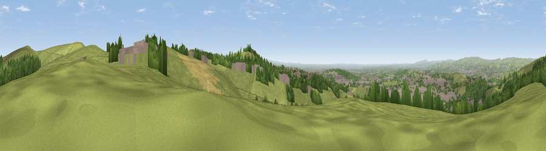

Viewpoint near Shaw
#6056 in England · top 3% of its area beats it · near ShawThe view, rendered

A 360° render of this exact spot computed from the terrain model, tree cover and land cover — summer colours, afternoon light, calibrated against photographs of famous viewpoints. Real trees, hedges and buildings will differ in detail.
The panorama
Grey silhouette: terrain skyline in each direction (720 bearings, Earth curvature and refraction included). Dashed green: skyline with trees (+15 m) and buildings (+8 m) as obstacles. Blue strip: how far the ground is visible on each bearing.
Where the view opens
Wedge length = distance to the farthest visible ground on that bearing (vegetation-aware). Rings at 10, 25 and 50 km.
What fills the view
53% grassland · 23% woodland · 20% built-up · 4% cropland
Angular shares of the visible panorama (visual magnitude), not map area. Landscape diversity 0.50 (0–1 Shannon).
Key numbers
More beautiful places nearby
The staircase of upgrades: each row has a higher view potential than everything closer. Driving times are estimates from straight-line distance, calibrated against real road routing — check an actual route before setting out.
| Place | Direction | Drive | Score |
|---|---|---|---|
| Viewpoint near Shaw | SSE · 1 km | ~3 min | 72.9 |
| Viewpoint near Greenfield | SE · 8 km | ~16 min | 76.0 |
| Viewpoint near Carrbrook | SSE · 10 km | ~19 min | 77.1 |
| Viewpoint near Edenfield | NW · 17 km | ~29 min | 77.5 |
| White Brow | W · 30 km | ~46 min | 82.9 |
| Warton Crag | NW · 79 km | ~103 min | 83.2 |
| Viewpoint near Grange-over-Sands | NW · 89 km | ~113 min | 83.4 |
| Viewpoint near Cartmel | NW · 92 km | ~117 min | 87.0 |
53.57791, -2.06849 · source: screening · position refined by local search. Computed location — check access rights before visiting.